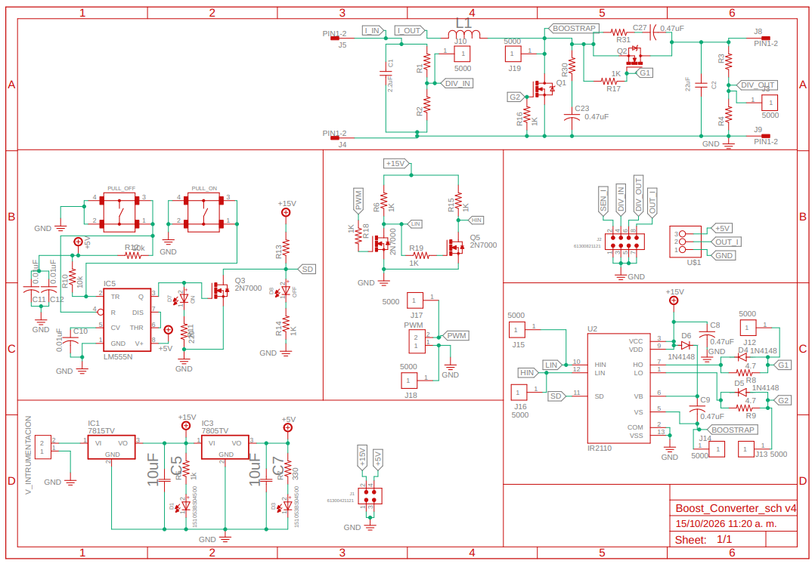
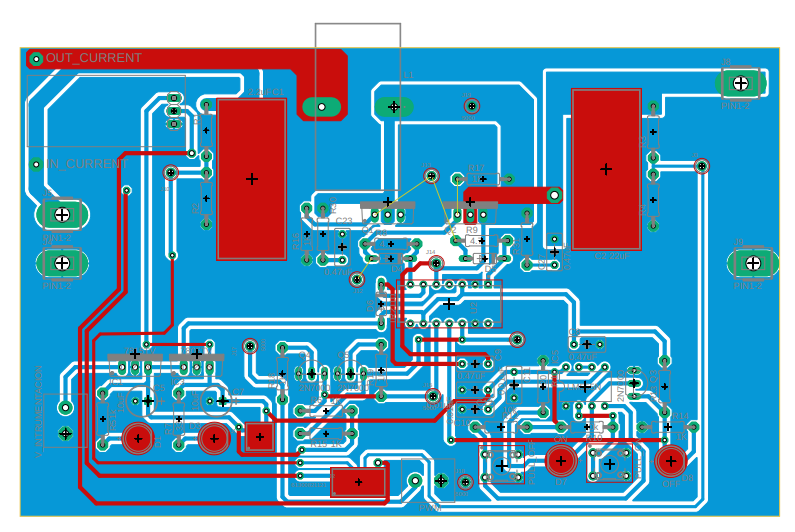
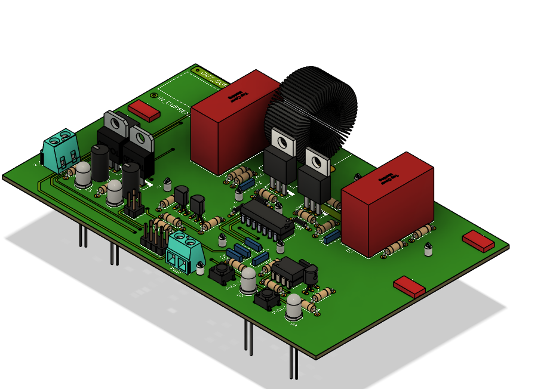
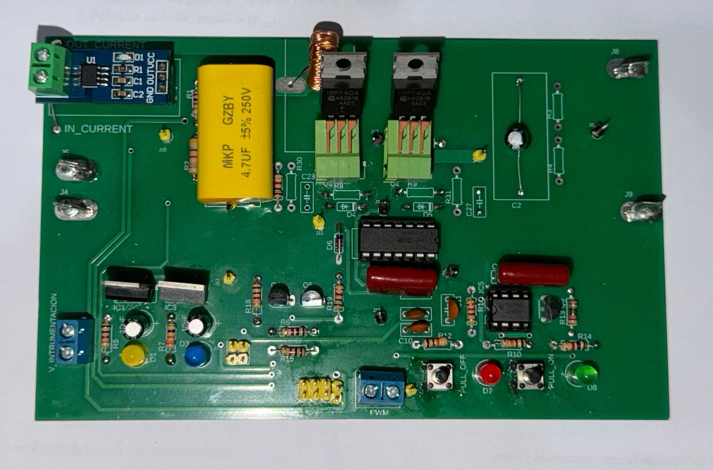

Electrónica de Potencia (EPW103-1) · Ingeniería Electrónica · ITM Medellín · 2026-2
Convertidor DC-DC Boost con regulación digital de tensión
Un Boost de 6 V a 12 V alimentado por un panel fotovoltaico y controlado con un Arduino UNO. Modelamos el sistema, construimos la placa y regulamos el voltaje del panel en lazo cerrado.
- −12 Vganancia estática por unidad de D
- 4.04 kHzfrecuencia natural (Cpv–L)
- 0.056factor de amortiguamiento
- 12.19 Vsalida medida (objetivo 12 V)
Pruebe la ganancia ideal del Boost
La relación ideal es Vo = Vin / (1 − D). Es ideal porque no incluye pérdidas en el inductor, el MOSFET ni los diodos. Cerca de D = 1 esas pérdidas dominan, y por eso el controlador limita D entre 3.9 % y 87.9 %.
¿Qué problema abordamos?
Un panel fotovoltaico no entrega siempre la misma tensión: cambia con la irradiancia y la temperatura. Para alimentar una carga a 12 V, el convertidor Boost compensa esa diferencia ajustando su ciclo de trabajo. Si el panel cae mucho, el Boost tiene que trabajar con ciclos cercanos a 1 y su eficiencia se desploma.
Este trabajo es la primera fase de un proyecto de grado: un reconfigurador dinámico de celdas que alterne entre serie y paralelo para evitar esos ciclos extremos. Aquí construimos la base: modelo matemático de la etapa de potencia, placa funcional y control digital del voltaje del panel.
La placa se desarrolló a partir de un diseño del profesor Juan Pablo Villegas. El control actúa sobre el voltaje de entrada, no el de salida, porque el convertidor debe operar cerca del punto de máxima potencia del panel.
Objetivo general
Analizar y modelar el comportamiento dinámico de un sistema fotovoltaico acoplado a un Boost, para sentar las bases del reconfigurador de celdas.
¿Cómo está organizado el sistema?
- Generación fotovoltaica.
Panel de ≈ 6 V y 0.6 A en el punto de máxima potencia. Se modeló como una fuente de 0.68 A en paralelo con 75 Ω y, en las pruebas, se emuló como fuente de corriente.
- Etapa de potencia.
Inductor de 330 µH, MOSFET IRF1404, capacitor de entrada de 4.7 µF (MKP) y de salida de 47 µF, con carga de 40 Ω a 12 V.
- Sensado.
Un divisor resistivo de relación 1.212 lleva el voltaje del panel al rango de 5 V del ADC. Resolución aproximada de 5.9 mV, con 10 lecturas promediadas por muestra.
- Disparo de compuertas.
El driver IR2110 maneja el MOSFET con una red bootstrap. Antes de tener el control digital se probó con un generador de señales a 31.25 kHz y 50 % de ciclo.
- Control.
El Arduino UNO ejecuta un PID discreto sobre el voltaje del panel y ajusta el PWM del Timer1.
- Protección por hardware.
Un LM555 con los pulsadores PULL_ON y PULL_OFF actúa sobre la entrada SD del IR2110. Apaga el convertidor sin depender del software.
Modelo y control
Modelo promediado
Seguimos el modelo promediado en espacio de estados de Erickson y Maksimović (2020). Los estados son el voltaje del panel vp y la corriente del inductor iL; las entradas son el ciclo de trabajo d y el voltaje de entrada. El voltaje de salida se tomó constante en 12 V. Al linealizar en D = 0.5, iL = 0.6 A y vp = 6 V con el método Jacobiano se obtiene:
diL/dt = (vp − vC(1 − d)) / L
d = 1 − 6 V / 12 V = 0.5
De ahí sale la función de transferencia entre el voltaje del panel y el ciclo de trabajo:
Es un par de polos complejos muy poco amortiguados, producto de la interacción entre Cpv y L. Si el controlador fuera rápido, esa resonancia sería su principal problema.
Controlador en el Arduino UNO
- Timer1 en Fast PWM con TOP = 511 y sin prescaler: 16 MHz / 512 = 31.25 kHz y 9 bits de resolución.
- PID discreto incremental, con integral trapezoidal y derivada por diferencias hacia atrás.
- Salida saturada entre 20 y 450 cuentas, aplicada como OCR1A = 470 − d. El ciclo queda entre 3.9 % y 87.9 %, sin llegar a valores extremos.
- Como se realimenta el valor saturado, el esquema tiene anti-windup implícito.
Especificaciones y componentes
| Elemento | Valor o modelo | Para qué sirve |
|---|---|---|
| Voltaje de entrada / salida | ≈ 6 V / 12 V | Punto de diseño del convertidor |
| Frecuencia de conmutación | 31.25 kHz | Frecuencia del PWM del Timer1 |
| Ciclo de trabajo de diseño | 0.5 | Relación 6 V → 12 V |
| Inductor | 330 µH (toroidal) | Almacena y transfiere la energía |
| Capacitores | Cpv = 4.7 µF, Co = 47 µF | Filtran entrada y salida |
| Carga | 40 Ω | 12 V sobre 40 Ω ≈ 3.6 W |
| MOSFET | IRF1404 (40 V, RDS(on) = 4 mΩ) | Conmutación con pocas pérdidas |
| Driver | IR2110 | Maneja las compuertas con bootstrap |
| Microcontrolador | Arduino UNO (ATmega328P, 16 MHz) | PWM, ADC de 10 bits y PID |
| Control | PID discreto incremental, muestreo de 2 ms (500 Hz) | Regula el voltaje del panel |
| Rango de ciclo de trabajo | ≈ 3.9 % a 87.9 % (OCR1A = 470 − d, d entre 20 y 450) | Evita ciclos extremos |
| Protección | LM555 + pulsadores | Apagado independiente del software |
| Reguladores auxiliares | 7815 y 7805 | Rieles de +15 V y +5 V |
| Diseño y simulación | Autodesk EAGLE, PSIM, MATLAB (sisotool) | PCB, modelo y sintonía |
| Costo de materiales | 50.000 COP | Accesible para uso académico |
Resultados
Probamos en lazo cerrado con carga de 40 Ω y el controlador regulando el voltaje del panel en 4.4 V.
| Parámetro | Teórico | Medido |
|---|---|---|
| Frecuencia PWM | 31 250 Hz | 30 346 Hz |
| Ciclo de trabajo en estado estacionario | 0.5 | 0.56 |
| Voltaje del panel (referencia 4.4 V) | 4.4 V | 4.8 V (error de 9.1 %) |
| Voltaje de salida | 12 V | 12.19 V |
Qué aprendimos
El convertidor eleva y mantiene la salida cerca de 12 V, y el control digital regula el panel. Pero la sintonía final salió de ajustes experimentales y no cumple el criterio de diseño inicial (ζ = 0.7071 y 1 ms de establecimiento).
Con Ki = 62.3 y una ganancia de planta de ≈ 0.023 V por cuenta, el integrador cruza en ≈ 1.5 rad/s (≈ 0.23 Hz). Los términos proporcional y derivativo son despreciables, así que el controlador se comporta como un integrador puro con un establecimiento del orden de 3 s. Para un voltaje de panel que varía despacio con la irradiancia es aceptable, pero no es lo que se diseñó.
El periodo de muestreo tuvo que subir de 500 µs a 2 ms (500 Hz). Como el lazo es tan lento, la resonancia de 4 kHz queda muy por encima de su ancho de banda y no se excita. Eso explica por qué el montaje es estable.
Placa de circuito impreso
La placa se diseñó en Autodesk EAGLE con pistas anchas para las corrientes de potencia y masas de potencia y señal separadas.




Guía de montaje y pruebas
- Etapa de instrumentación. Suelde los reguladores 7815 y 7805 y compruebe +15 V y +5 V con sus LED indicadores.
- Lógica de protección. Monte el LM555 con los pulsadores PULL_ON y PULL_OFF y verifique que el pin SD del IR2110 responde.
- Disparo. Monte el IR2110 y su red bootstrap. Pruebe con un generador de señales: PWM de 31.25 kHz, 50 % de ciclo y offset de 2.5 V.
- Potencia. Monte el inductor toroidal, los MOSFET y los capacitores. Respete la polaridad del capacitor de salida.
- Sensado y control. Conecte el divisor resistivo a A0 y cargue el programa en el Arduino UNO.
Lista de verificación antes de energizar
- No hay cortos entre GND y VCC (multímetro en continuidad).
- Se energiza primero la lógica (+15 V y +5 V) y después la potencia.
- No hay PWM presente antes de conectar el panel.
- La corriente está limitada a 0.2 A en las primeras pruebas.
- PULL_OFF queda a la mano como corte de emergencia.
Ética y ambiente
El prototipo trabaja a tensiones extra bajas, pero conmuta a 31.25 kHz y el MOSFET y los reguladores lineales se calientan. Una versión comercial tendría que cumplir normas como IEC 62109-1 y RETIE; el prototipo no está certificado y no se midió emisión electromagnética. Los reguladores 7815 y 7805 disipan mucha energía en forma de calor, así que una versión futura debería usar reguladores conmutados. Al final de su vida útil, los residuos electrónicos deben ir a gestores autorizados (Ley 1672 de 2013).
Equipo
Referencias
- Erickson, R. W., & Maksimović, D. (2020). Fundamentals of power electronics (3rd ed.). Springer. doi.org/10.1007/978-3-030-43881-4
- De Soto, W., Klein, S. A., & Beckman, W. A. (2006). Improvement and validation of a model for photovoltaic array performance. Solar Energy, 80(1), 78–88. doi.org/10.1016/j.solener.2005.06.010
- Bai, J., Cao, Y., Hao, Y., Zhang, Z., Liu, S., & Cao, F. (2015). Characteristic output of PV systems under partial shading or mismatch conditions. Solar Energy, 112, 41–54. doi.org/10.1016/j.solener.2014.09.048